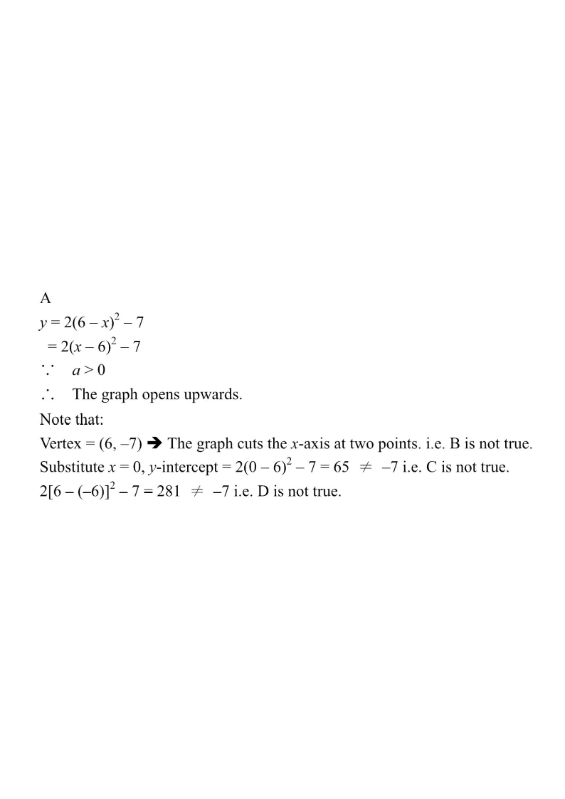

Which of the following statements about the graph of $y=2(6-x)^2-7$ is true?
A. The graph opens upwards.
B. The graph does not cut the $x$-axis.
C. The $y$-intercept of the graph is $-7$.
D. The graph passes through the point $(-6,-7)$.

Figure (original exam diagram)
1Rewrite into vertex (completed-square) form
Vertex Form of a Quadratic Function\(y=a(x-h)^{2}+k\ \Longrightarrow\ \text{vertex }(h,k)\)Because \((4-x)^{2}=(x-4)^{2}\), the function is \(y=3(x-4)^{2}+5\) with vertex \((4,\,5)\).
\[y=2(6-x)^2-7=2\big(-(x-6)\big)^2-7=2(x-6)^2-7\]
So the vertex is at $(6,\,-7)$ and the leading coefficient is $a=2$.
Hint: $(6-x)^2=(x-6)^2$ — squaring removes the sign inside.
2Test A — does the graph open upwards?
In $y=a(x-h)^2+k$ the parabola opens upwards when $a>0$.
Here $a=2>0$, so the graph opens upwards.
✔ Statement A is TRUE.
Hint: $a=2$ positive → a "U-shaped" (upward) parabola.
3Test B — does the graph cut the $x$-axis?
The vertex is $(6,-7)$, which lies below the $x$-axis, and the parabola opens upwards.
Hence the curve must rise and cross the $x$-axis twice:
\[2(x-6)^2-7=0\;\Rightarrow\;(x-6)^2=\tfrac72\;\Rightarrow\;x=6\pm\sqrt{\tfrac72}\approx 4.13,\;7.87 .\]
✘ Statement B is FALSE — the graph cuts the $x$-axis at two points.
Hint: $k=-7<0$ with $a>0$ ⟹ two distinct $x$-intercepts.
4Test C — find the $y$-intercept
y-intercept of a Graph\(\text{put }x=0\ \text{in }y=f(x)\)The \(y\)-intercept is \(3(0-4)^{2}+5=53\), not the vertex value \(5\).
Put $x=0$:
\[y=2(0-6)^2-7=2(36)-7=72-7=65 .\]
The $y$-intercept is $65$, not $-7$.
✘ Statement C is FALSE.
Hint: don't confuse the $y$-intercept with the vertex's $y$-coordinate.
5Test D — does it pass through $(-6,-7)$?
Put $x=-6$:
\[y=2\big(6-(-6)\big)^2-7=2(12)^2-7=288-7=281\neq -7 .\]
So the point $(-6,-7)$ is not on the graph (the point $(6,-7)$ is the vertex).
✘ Statement D is FALSE.
Hint: the vertex is $(+6,-7)$, not $(-6,-7)$ — watch the sign of $h$.
Option
Claim
Verdict
A
opens upwards
TRUE ($a=2>0$)
B
no $x$-axis cut
FALSE (2 cuts)
C
$y$-intercept $=-7$
FALSE (it is $65$)
D
passes $(-6,-7)$
FALSE ($y=281$)
Answer: A — the graph opens upwards.
PRACTICESimilar question — try it yourself
Question. Consider the graph of \(y=3(4-x)^{2}+5\). Which of the following are true? A. The graph opens upwards. B. The graph cuts the \(x\)-axis at two points. C. The \(y\)-intercept of the graph is \(5\). D. The vertex of the graph is \((4,\,5)\).
Show the worked solution
Step 1. Since \((4-x)^{2}=(x-4)^{2}\), the function is \(y=3(x-4)^{2}+5\), so the vertex is \((4,\,5)\) and \(a=3>0\).
Step 2. A: \(a=3>0\), so the graph opens upwards — true.
Step 3. B: the least value of \(y\) is \(5>0\), so the graph never meets the \(x\)-axis — false.
Step 4. C: put \(x=0\): \(y=3(16)+5=53\), so the \(y\)-intercept is \(53\), not \(5\) — false.
Step 5. D: the vertex is \((4,\,5)\) — true. Hence A and D are true.
Answer: A and D
Key idea: for $y=a(x-h)^2+k$, the sign of $a$ decides the opening direction, $(h,k)$ is the vertex, and the $y$-intercept comes from $x=0$.